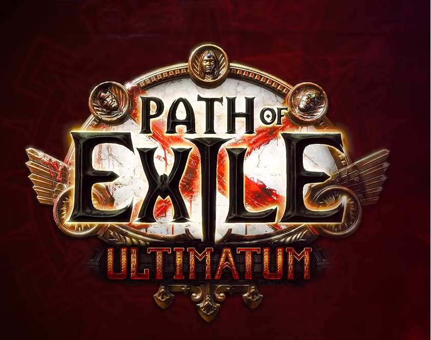
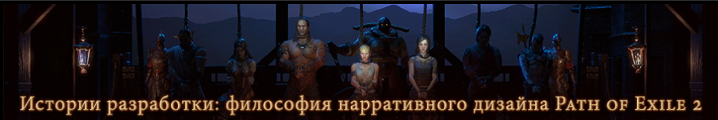

Новая лига и изменение баланса в path of exile 3.14

Лиги испытаний - отличная возможность начать игру в свежей экономике. Все ваши существующие персонажи и предметы останутся в постоянных лигах Стандарт и Одна жизнь, но вы можете создать героя в новой лиге, чтобы завершить испытания и продемонстрировать мастерство игры в Path of Exile!
Одного из самых популярных стримеров Path of Exile забанили за эксплойт с лутом
Лига Ультиматум появилась в Path of Exile ещё 17 апреля, однако до сих пор, «по традиции», игроки продолжают находить баги. Один из таких оказался очень серьёзным и вызвал большую инфляцию в игре.
Истории разработки: философия нарративного дизайна Path of Exile 2

В Path of Exile 2 многое в мире Рэкласта изменилось, а значит, и наш подход к повествованию должен быть иным. В сегодняшней статье нарративный дизайнер Мэтт Димерски делится некоторыми подходами к подаче сюжета, которые мы применяем для создания более правдоподобной истории и впечатлений от Path of Exile 2.